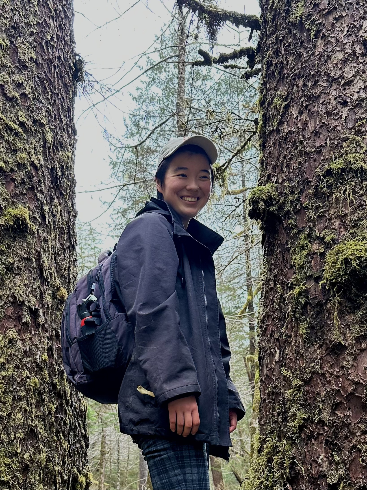

Welcome! I am an evolutionary biologist at UCLA studying fish macroevolution. I am currently updating the Fish Tree of Life with the Alfaro Lab to examine the evolution of color pattern across Actinopterygii.
My research interests center on evolutionary adaptation in fishes and their biomimetic applications. Past projects have investigated fin biomechanics in reef species and migratory patterns in Pacific salmon. My research uses large-scale phylogenomic approaches — including ultraconserved elements (UCEs) — to build a scaffolding for a supertree of ray-finned fishes. I aim to use the resulting tree to examine broad trends in color pattern evolution. The present color pattern diversity in fishes represents thousands of solutions to a shared ecological challenge: maintaining crypsis and conspicuousness in a variable environment.